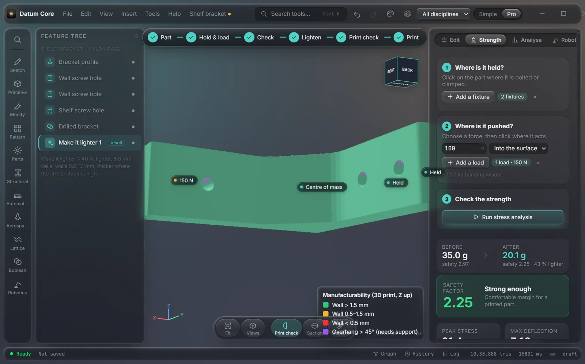
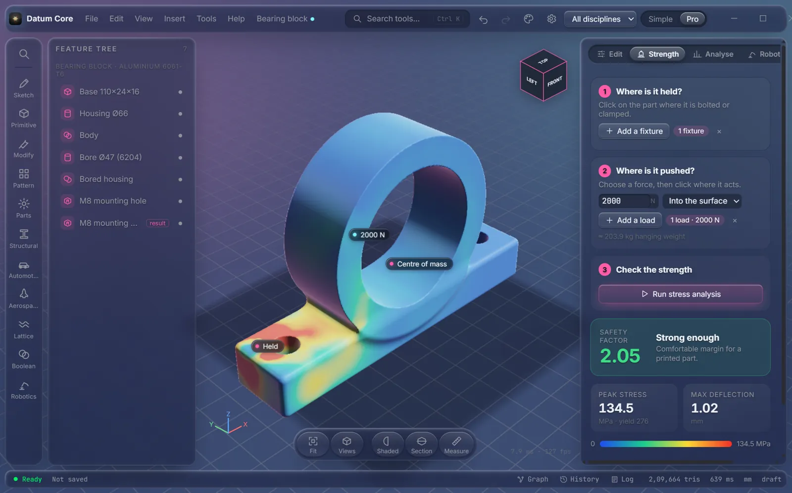
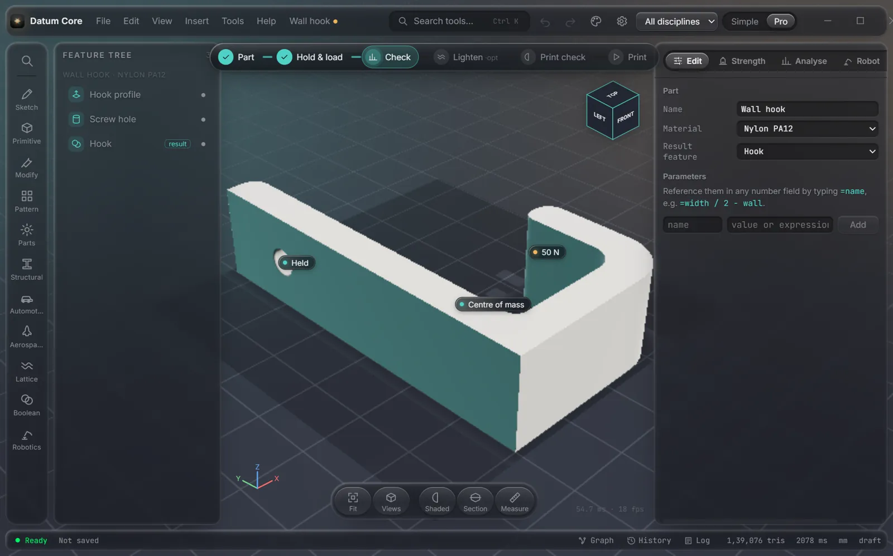

Bring in a part, mark where it is bolted and where it is pushed, see where it is stressed, and make it lighter in one click. Then send it to your slicer.
Free and open source (MIT) · Windows 10/11 · works on integrated graphics

A step bar guides you; each step is one click.
Import STEP, STL or OBJ from any CAD or Printables, or start from a template (brackets, hooks, enclosures, gears).
Click where it is screwed down, then where the weight goes, e.g. 150 N for a 15 kg shelf.
A finite-element analysis colours the part by stress and gives a safety factor in seconds.
The inside becomes a gyroid lattice: thick where it works hard, thin where it idles. Pick −20 % to −60 %.
Thin walls and overhangs that need support, coloured right on the part.
Choose your printer and filament, check it fits the bed, see time, grams and cost, open it in your slicer.

Datum Core runs a real stress analysis on the part itself: no meshing, no setup screens. Red is where it works hardest; the safety factor tells you whether it holds.
"Make it lighter" keeps a solid skin and grades the lattice by the stress map, so you save plastic and print time without guessing infill. Walls never go below 0.6 mm, so they print with a normal nozzle.

The geometry is an exact field, so booleans, shells, blends and lattices never fail.
And tell us what got in your way: it shapes what comes next.